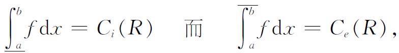
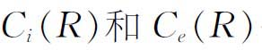
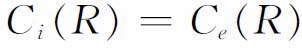
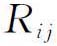
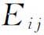
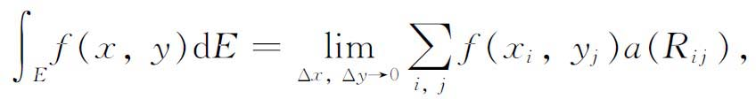
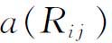
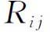

3．有关容量和测度的早期工作
沿着完全不同的另一条思想路线，导致积分概念的不同推广的，就是勒贝格积分。因为函数不连续点的广延决定了函数的可积性，所以研究函数的不连续点集，就提出了怎样度量它的广延或“长度”的问题。容量（content）理论及后来的测度论就是为了把长度概念扩充到普通直线上非完整区间的点集而引进的。
容量概念基于下面的思想：考虑一个按某种方式分布在区间［a，b］上的点集E。暂时放宽些条件，假定E中的点都可以被［a，b］的小子区间包围或覆盖，使得E的点或者是［a，b］的子区间的内点，或者是子区间的一个端点。我们愈来愈缩小这些子区间的长度，为了继续包住E的点，如果必要，可以再添加些别的子区间，但总的说来，要缩小这些子区间的长度的总和。覆盖住E的点的那些子区间的长度总和的最大下界，就称为E的（外）容量。这种不严格的形式并不是最后被采用的确定的概念，但它可以用来指明人们想干什么。
（外）容量概念是杜波依斯-雷蒙在他的《一般函数论》（Die allgemeine Funktionentheorie，1882）中，哈纳克（Axel Harnack，1851—1888）在他的《微积分原理》（Die Elementeder Differential-und Integralrechnung，1881）中，以及斯托尔兹(2)和康托尔(3)给出的。斯托尔兹和康托尔还用矩形和立方体等代替区间，把容量概念扩充到2维和高维点集。
不幸的是，容量概念的使用，并不是在所有方面都令人满意的，然而却揭露了存在着正容量的无处稠密集（即一个区间上的集合，在该区间的任一子区间内它都不稠密），而以这样一个集合为不连续点集的函数在黎曼意义下是不可积的。同时还揭露了，具有有界但不可积的导数的函数也存在。但在19世纪80年代，数学家们都认为黎曼的积分概念是不能推广的。
为了克服上述容量理论的局限性，并为了把一个区域的面积概念严密化，皮亚诺［《无穷小计算的几何应用》（Applicazioni geometriche del calcolo infinitesimale，1887）］引进了一个比较完满的并作了多次改善的容量概念。他引进了区域的内容量和外容量。假定考虑的是2维区域。这里的内容量是包含在区域R内的一切多边形区域的最小上界，而外容量是包含区域R的一切多边形的最大下界。如果内容量和外容量相等，这个公共值就是区域R的面积。对于1维点集，思路是类似的，只须用区间代替多边形。皮亚诺指出，如果f（x）在［a，b］上非负，则

其中第一个积分是f在［a，b］上的下黎曼和的最小上界，而第二个积分是上黎曼和的最大下界；

分别是由f的图形所围成的区域R的内、外容量。因此，为要f是可积的，必须且仅须R具有在
意义下的容量。在19世纪的容量理论中，最先进的一步是若尔当迈出的（他把容量叫做étendue）。他也引进了内容量和外容量(4)，但概念陈述得更有力。他的关于［a，b］中点集E的容量的定义，是从外容量出发的。用［a，b］子区间的一个有穷集合覆盖E，使得E的每一点是某个子区间的内点或端点。那些至少含有E的一个点的所有子区间的长度总和的最大下界便是E的外容量。内容量则定义为那些只含有E的点的［a，b］子区间长度总和的最小上界。如果E的内容量和外容量相等，那么它就有容量。除了用矩形及其高维类似物代替子区间外，若尔当把同一概念运用到n维空间的点集。这时若尔当就能够证明所谓的可加性：有限多个不相交的、有容量的集合的并，其容量等于各个集合的容量之和。对于早期的容量理论，除了皮亚诺的以外，这一点都是不对的。
若尔当对容量的兴趣来源于，企图弄清楚平面区域E上的二重积分的理论。通常采用的定义是，把平面用平行于坐标轴的直线分成许多正方形

。平面的这种分划导致了E被分划成一些
。于是由定义
其中

表示的面积，和是对一切（E内部的，及含有E的点同时也许还含有E以外的点的）取的。为了使积分存在，必须证明那些非整个地包含在E内的可以忽略不计，换句话说，那些包含E的边界点的的面积的总和，要在的尺寸趋于0时趋于0。过去，一般总是假定这是对的，而若尔当本人在他的《分析教程》的第一版（第二卷，1883）中就是这样做的。然而当皮亚诺发现了填满矩形的特殊曲线之后，数学家们就更加小心翼翼了。如果E具有2维的若尔当容量，那么包含E的边界点的
就可以忽略不计。若尔当还能够得到用累次积分计算重积分的结果。若尔当在《分析教程》的第二版（第一卷，1893）中，写进了他的关于容量的研究及其对积分的应用。虽然若尔当关于容量的定义比他的前人优越，但也还不完全令人满意。按照他的定义，一个有界开集不一定有容量，包含在一个有界区间里的有理点集也没有容量。
容量理论的下一步是波莱尔做出的。在处理表示复函数的级数收敛的点集时，他被引向他称之为测度的理论。波莱尔的《函数论讲义》（Leçons sur la théorie des fonctions，1898）包含了他在这方面最主要的工作。他看出容量的早期理论中的缺陷并对之作了补救。
康托尔曾经证明，直线上的任一开集U必定是一族可数个两两不相交的开区间的并集。波莱尔利用康托尔的结果，不再用有穷个区间包围U去逼近U的方法，而是提出把一个有界开集的各个构成区间的长度总和，作为这个开集的测度。然后他定义可数个不相交可测集的并集的测度为各个测度的总和；如果A和B都是可测的，并且B包含在A内，则定义A－B的测度为这两个测度的差。由这些定义，他就能对任何可数个不相交可测集的并集以及两个可测集A，B的差集（只要A包含B）赋予测度。然后他考虑了零测集，并证明测度大于0的集合是不可数的。
波莱尔的测度论是对皮亚诺和若尔当容量理论的一个改进，但它还不是最终的形式，而且也没有被应用到积分中去。